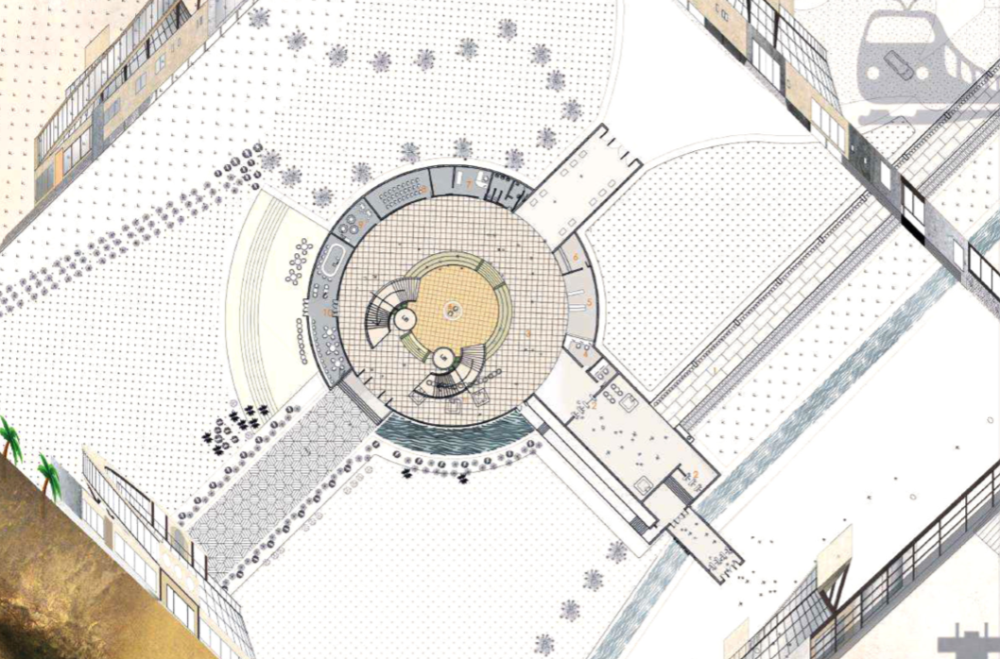

About Bowen Ma
I’m Bowen Ma, a senior student in Kettle Moraine Lutheran high school. I was born in China and have been in the United States for five years. I have different interests in areas such as math, physics, and computer science. I enjoy the process of thinking, adding the influences from my father and my grandfather, I attended an architecture summer program and joined a school math club to expand my knowledge on analyzing, calculating, and 3D modeling. Below are my works to share with you.
The Elgar Road Precinct has a number of
destinations that are relatively disconnected from
each other. The diverse range of program across
the precinct will benefit greatly from an increased
level of connectivity.
The Learning Commons is a catalyst for creating
a new and unified campus experience across
the Elgar Road precinct. Fundamental to this
campus experience is the establishment of a clear
framework of connectivity.
East Juang Jue Road and Planning
Road facade references modern
developments with gridded facade. Shopping centre block is
reconsidered to become porous
and connected to the urban and
natural fabric. The Built form facing the two
landscaped edges of the site
references existing natural
landscape, with terraced levels

Hybrid Project of Train Station & Logistics Museum, Anaklia, Georgia
This program is a district design located in the center of the city, employing one kind of design completely different from
residential district of Chinese style. First of all, we have studied the relationship between user experience and space scale, and
summed up methods in controlling scale of Old Peking residential buildings (Hutong). Finally, the conclusion will be applied
to the program design. Introduction of this program is divided into two parts, the first of which is the overall planning,
focusing on how this program is generated while the second of which is individual building design. Here I selected typical
slab buildings and tower buildings for introduction.
Due to the very close proximity of the sea port to the
village, the new railway line that will be constructed
establishes a metaphorical boundary between the two
and as such divides the area for work and residential; i! is
the entrance point of both Anaklia as a village and Anaklia
as a sea port. Providing arrival via train, to the sea port,
the beach, the village - for all the different sets of people
and inhabitants: businessmen, workers, tourists and locals
-the permanent and the temporary will pass each other
in the station. The station sits between three architectural
languages - the vernacular, the legacy of soviet concrete
and the upcoming contemporary port operations.